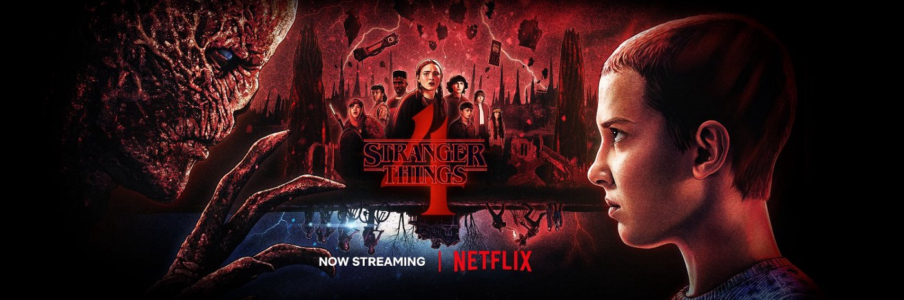

Role: Eleven
In 2016, Millie Bobby Brown was
cast to play Eleven in the Netflix science
fiction horror series Stranger Things.
She received critical praise for her
performance and she was nominated for the
Screen Actors Guild Award the Primetime
Emmy Award. She then won the Screen Actors
Guild Award for Outstanding Performance
by an Ensemble in a Drama Series with her
co-stars and won the 43rd Saturn Award for
Best Performance by a Younger Actor in a
Television Series. For her role as Eleven in
the second season of Stranger Things, she
received her second nominations for a Screen
Actors Guild Award and a Primetime Emmy
Award in 2018.
Role: Will Byers
Noah Schnapp (born October 3, 2004)
is an American actor. His breakthrough
came in July 2016, when he began starring
as Will Byers in the Netflix science fiction
horror television series Stranger Things. In
2019, he launched a YouTube channel under his
own name. Active for a year and a half, he
primarily created vlogs and lifestyle videos.
As of June 2022, the channel has 4.2 million
subscribers and has gained 110 million views.
In November 2021, Schnapp launched To Be Honest
(TBH), a sustainability-focused snacking
company.In November 2022, Schnapp announced
a crowdfunding campaign for this venture on
the Republic platform that aimed to raise a
maximum amount of $1.235 million at a $15
million valuation cap.
Role: Mike Wheeler
Finn Wolfhard (born December 23,
2002) is a Canadian actor and musician.
He gained recognition for playing Mike
Wheeler in the Netflix series Stranger
Things (2016–present). In 2016, Wolfhard
began portraying Mike Wheeler in the
Netflix series Stranger Things. He
auditioned for the role via video after
seeing an open casting call. Wolfhard,
along with his castmates, won a SAG Award
for Outstanding Performance by an Ensemble
in a Drama Series. Wolfhard made his
feature film debut playing Richie Tozier
in the 2017 film adaptation of Stephen
King's It. The casting of Wolfhard in both
Stranger Things and It, both set in the
'80s, had been a coincidence.